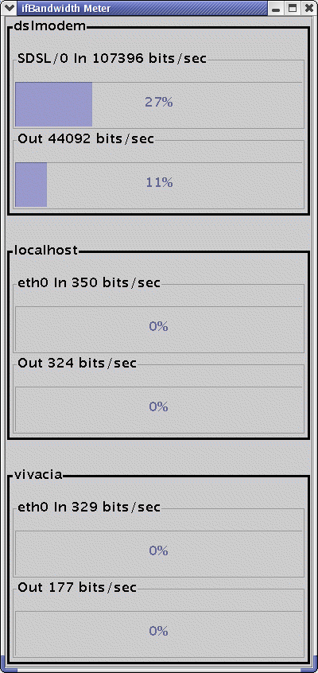
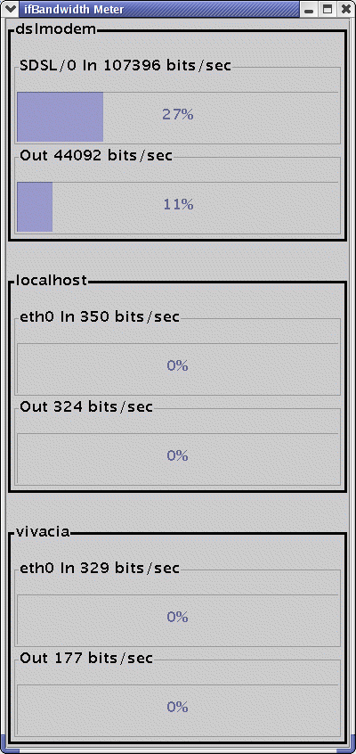

Download
Contact Us
Support
netsnmpj is an open source Java library that allows
java code to perform SNMP v1, v2c and v3 operations using the net-snmp
library. It is composed of both java and native code elements.
Please read the INSTALL file for details on installation.
Currently Windows, Linux and Solaris(sparc) are supported. Other
platforms can be made available
Linux Red Hat 9
Solaris8
Windows NT/Win2k/WinXP
Net-snmp 5.0.6 or above
Java 1.4.2 or above
aepage@users.sourceforge.net
Screenshots:
 
